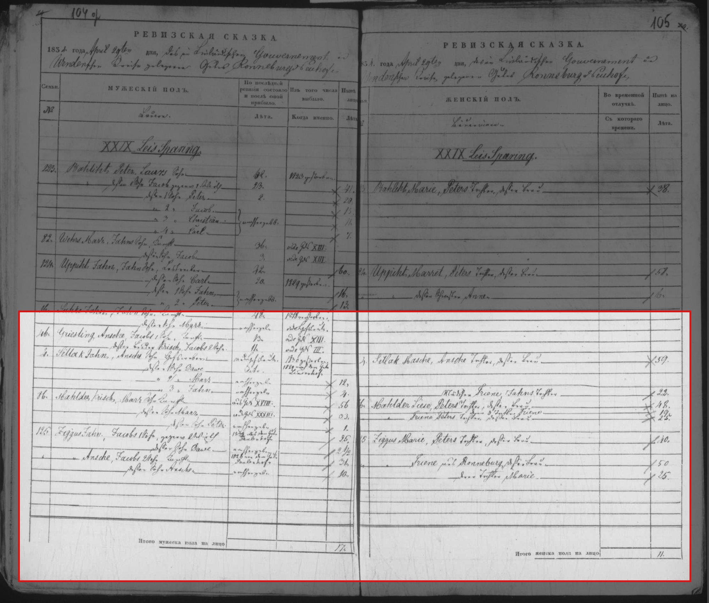
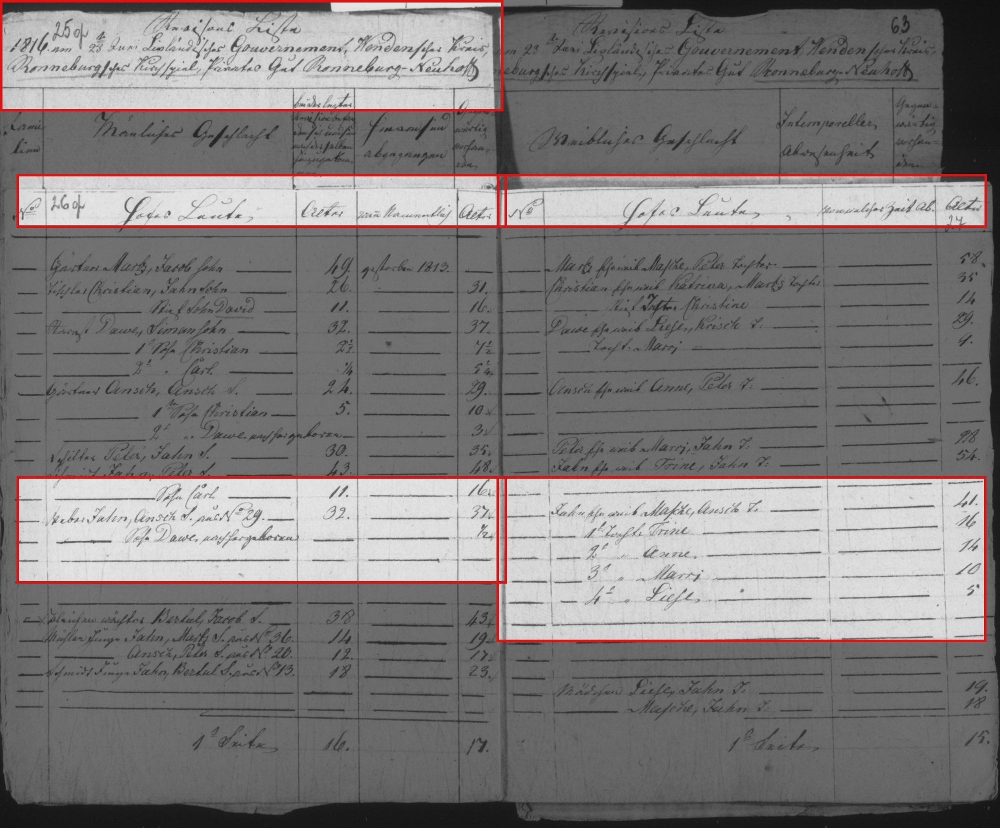

Masche b. 1775
Peter's 4× great-grandmother.
Also recorded as Masche Sirlaks.
Masche was born about 1775 (according to an online family tree)2, the daughter of Ansis5,6. She has died (according to an online family tree)4, but the date of death is not yet documented.
Family
- Parents
- Ansis documented
- Partner
- Jānis Sirlaks 1779–1830
- Children
- Mārcis Sirlaks b. 1821 possible
- Jānis Sirlaks 1829–1901 documented
- Dāvis Sirlaks b. 1815 documented
Life events
| Event | Date | Place and details |
|---|---|---|
| Born | abt 1775 | According to an online family tree2 |
| Lived | 1834 | Lejas-Spāriņi farm, Jaunrauna, Rauna, Cēsis district, Vidzeme, Latvia3 |
| Died | not yet documented | According to an online family tree4 |
Records


Sources
- MyHeritage family tree 'Dzimta' of Peter's third cousin (his family site), member GEDCOM export of 26 Oct 2026, I500606 (person-6500606), GEDCOM lines 17780–17791.
NAME Masche /Sirlaks/
- MyHeritage family tree 'Dzimta' of Peter's third cousin (his family site), member GEDCOM export of 26 Oct 2026, I500606 (person-6500606), GEDCOM lines 17780–17791.
BIRT · ABT 1775
- Jaunrauna (Ronneburg-Neuhof) soul revision 1834, XXIX. Leis-Sparing, family 4 (Sillak), LVVA f. 199, apr. 1, l. 376, image 112, LVVA f. 199, apr. 1, l. 376, image 112.
[XXIX. Leis-Sparing] / ... / 4. | Sillak Jahn, Ansche Sohn, Hofsweber | v. d. Hofsleuten | 1830 gestorben | — / deßen 1 Sohn Dawe | dito | 1829 nach dem Gute Lindenhof | — / " 2 " Marz | nachher geb. | — | 12. / " 3 " Jahn | nachher geb. | — | 4. ‖ 4. | Sillak Masche, Ansche Tochter, deßen Frau | 59.
Translation: [XXIX. Lejas-Spāriņi]: ... Family 4: Sillak Jahn, Ansche's son, manor weaver, from the manor people, died in 1830; his 1st son Dawe, ditto, 1829 to Lindenhof [Liepa] estate; 2nd son Marz, born since, 12; 3rd son Jahn, born since, 4. Sillak Masche, Ansche's daughter, his wife, 59.
Jaunrauna (Ronneburg-Neuhof) 8th soul revision (1834, LVVA f. 199, apr. 1, l. 376, image 112), farm XXIX. Leis-Sparing, family no. 4: 'Sillak Jahn, Ansche Sohn, Hofsweber | v. d. Hofsleuten | 1830 gestorben' (manor weaver, came from the manor people, where in the 1826 surname revision on image 58 he was listed as 'IV. Sirlack | Jahn, Ansche Sohn, Hofsweber | 1825 v. Gute Wesselshof zugekommen | 47'; died in 1830); his 1st son Dawe ('deßen 1 Sohn Dawe | dito | 1829 nach dem Gute Lindenhof' — moved in 1829 to Liepa / Lindenhof manor, where he later appears as churchwarden 'Kirchenvorm. Dahwis Sillak' in 1859–62); his 2nd son Marz ('2 Sohn Marz | nachher geb. | 12', born c. 1822 — our ancestor Mārcis Sirlaks, who moved from No. XXIX Leis-Sparing to No. XIV Wihstuz and fathered Pēteris Sirlaks in 1847); his 3rd son Jahn ('3 Sohn Jahn | nachher geb. | 4', born c. 1830 — who also moved from No. XXIX to No. XIV Wihstuz by 1850, age 20); and his widow 'Sillak Masche, Ansche Tochter, deßen Frau | 59.' (matching her age 51 in 1826 + 8 = 59).
- MyHeritage family tree 'Dzimta' of Peter's third cousin (his family site), member GEDCOM export of 26 Oct 2026, I500606 (person-6500606), GEDCOM lines 17780–17791.
DEAT · Y (marked deceased; no date or place)
- MyHeritage family tree 'Dzimta' of Peter's third cousin (his family site), member GEDCOM export of 26 Oct 2026, family F500299: I500606 Masche, child of I500773 Ansis.
Our 1816 Jaunrauna revision names her 'Jahns Eheweib Masche, Ansch T.' (daughter of Ansis).
- Jaunrauna estate revision 1816, manor people, LVVA f. 199, apr. 1, l. 376, image 31 (fol. 26); farm 29 on image 54 (fol. 49), LVVA f. 199, apr. 1, l. 376, image 31.
Weber Jahn, Ansch S., a. d. No. 29 | 32. | 37. / Sohn Dawe, nachhergeboren | ½ — Jahns Eheweib Masche, Ansch T. 41
Translation: Weaver Jahn, son of Ansis, from no. 29, 32 [in 1811], 37 [now]; son Dāvis, born since, ½. Jahn's wife Masche, daughter of Ansis, 41.
1816 revision (7th), manor people: weaver Jahn, son of Ansch (Ansis), from farm no. 29, aged 32 in 1811 and 37 in 1816 (b. c. 1779); son Dawe, born after 1811, ½. Wife Masche, daughter of Ansch, 41 (b. c. 1775); daughters Trine 16, Anne 14, Marri 10, Liese 5. No surname yet (surnames were assigned in Livonia c. 1822–1826). Also on farm 29 (image 54): farmhand Jahn son of Ansch 'in B', son Peter d. 1814; and young Jahn son of Ansch 'in No. 20'. Died 1830[?] per the 1834 list.